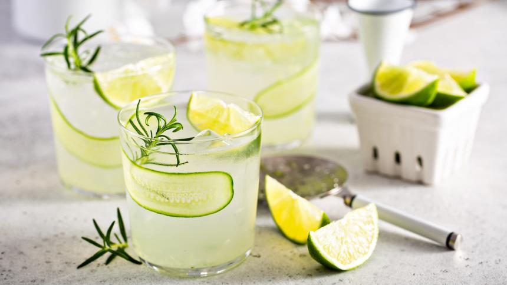
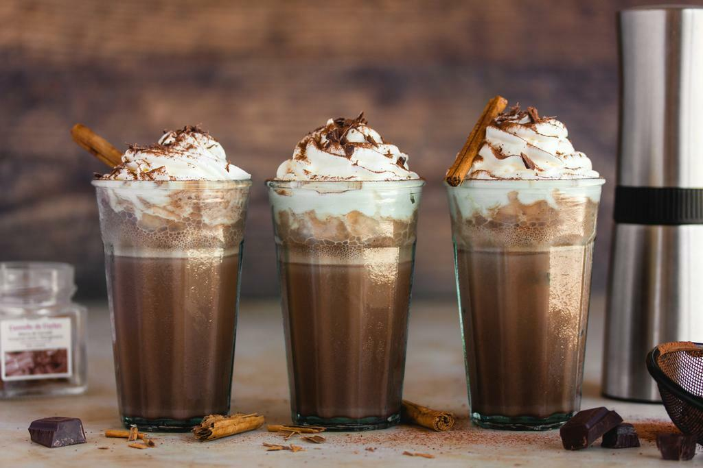
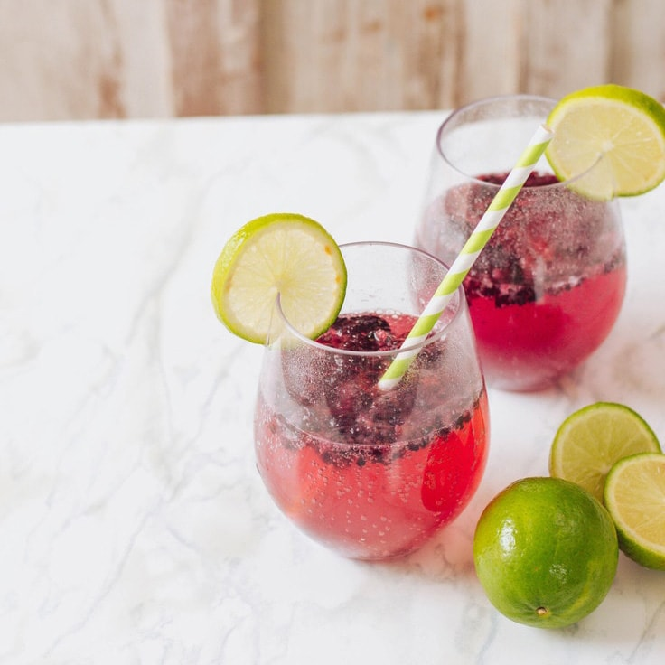
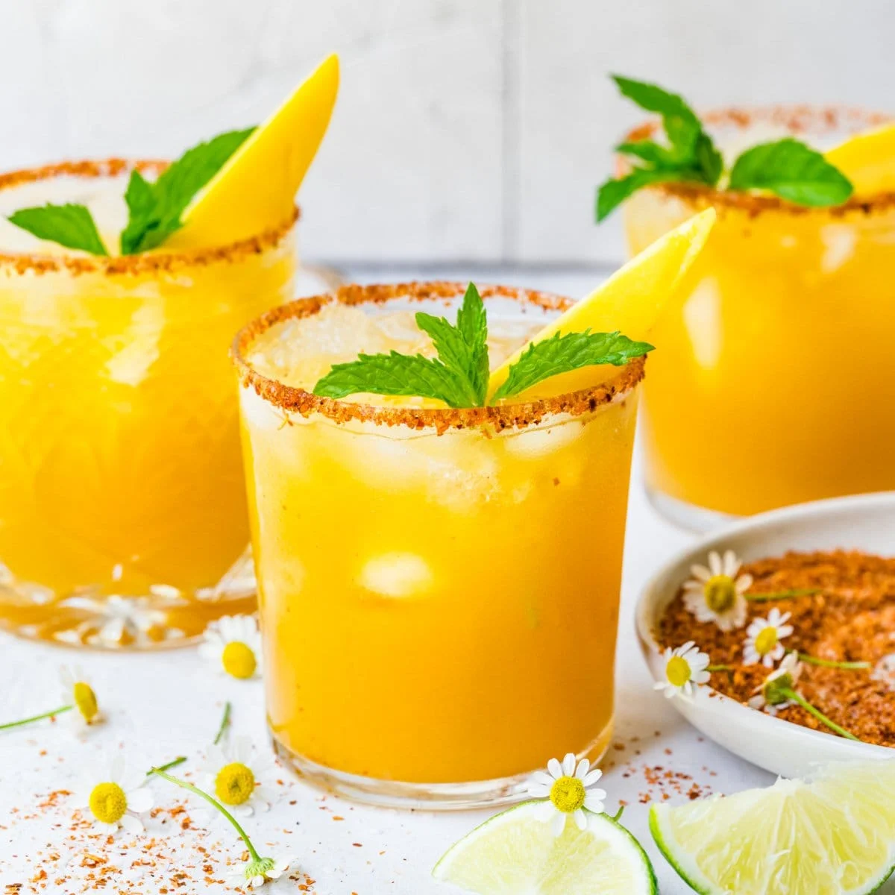
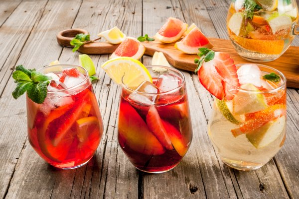

Sparking Cucumber Limeade

Ingredients
- 20 ounces sparkling water
- 4 cucumbers, plus 1 thinly sliced lengthwise
- 2 lemons
- 2/ 3-ounce simple syrup
- 5 leaves fresh mint
How to make
- Juice the cucumbers and lemons.
- Add simple syrup, then mint leaves and muddle.
- Decorate the glass with the thinly sliced cucumbers.
- Add chilled sparkling water.
- Garnish with mint when serving.
Iced Chocolate

Ingredients
- 4–6 medium ice cubes
- 1 cup oat milk
- 2 tsp unsweetened cacao powder (100% cacao)
- 2 tsp maple syrup (more or less to personal taste)
- 1/3 cup boiled water
How to make
- In a cup (or mug) whisk together any optional ingredients (except for the sweetener) and the cacao and boiling water. Whisk until you have a smooth hot mixture without any clumps. If you still find clumps your water is not hot enough or you should whisk longer.
- Fill a large serving glass with ice cubes. Pour the hot chocolate mixture over the ice cubes. After that, also add the oat milk.
- Add a liquid syrup sweetener to your iced chocolate and serve immediately with a straw.
Blackberry Lime Soda

Ingredients
- 1 (12-oz.) package fresh blackberries
- 1 cup powdered sugar
- ½ cup fresh lime juice
- 4 cups chilled water or club soda
- Garnish: lime wedges, fresh blackberries
How to make
- Process 12-oz. package fresh blackberries, powdered sugar, and lime juice in a blender until smooth (about 30 seconds).
- Press mixture through a fine wire-mesh strainer into a large pitcher, using back of a spoon to squeeze out juice. Discard pulp and seeds.
- Stir in chilled water or club soda.
- Garnish, if desired.
Juicy Mango Margarita

Ingredients
- 3 cups cubed frozen mango, from about 4 small mangos
- ¼ cup lime juice, plus lime slices for garnish
- 3 ounces silver tequila
- 2 ounces Cointreau
- 3 handfuls ice cubes
How to make
- Place the mango, lime juice, tequila, and Cointreau in a blender and blend until smooth. Add the ice and blend to the desired consistency.
- If the mixture is too thick to blend, let it sit and melt for a few minutes.
- If desired, use a lime wedge to moisten the rims of the glasses and then dip the rims in a small plate of salt.
- Pour the mango mixture into the glasses and garnish with a lime slice.
Fruit Freeze

Ingredients
- 2 cans (15 oz each) grapefruit segments, undrained
- 2 cans (15 oz each) citrus salad*, undrained
- 1 can (15 oz) mandarin oranges, undrained
- 1/2 cup sugar
- 1 jar (10 oz) maraschino cherries, unstemmed, undrained
- juice from 1/2 lemon
- 2 cans (20 oz each) crushed pineapple, undrained
- 2 liters lemon-lime soda
- 1 pint lemon sorbet
How to make
- Working in batches if needed, combine the cans of grapefruit, citrus salad, oranges and sugar in a blender and blend for 30 seconds to combine.
- Roughly chop the cherries and add the cherries and the juice to the mixture along with the lemon juice.
- Spread the pineapple into the bottoms of two 9×13-inch baking dishes. Pour half of the pureed mixture into each of the dishes. Stir lightly to combine.
- Cover with plastic wrap and place in the freezer until frozen.
- When ready to serve, chop the frozen mixture and place in punch cups. Top with lemon lime soda and a small scoop of lemon sorbet.